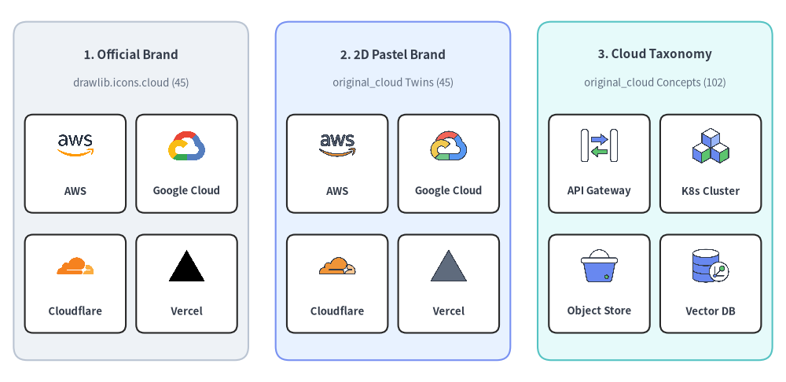
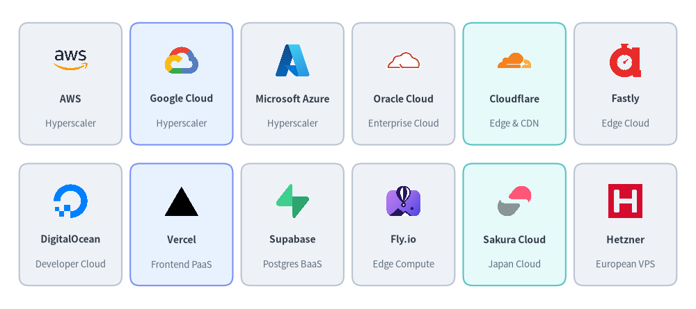
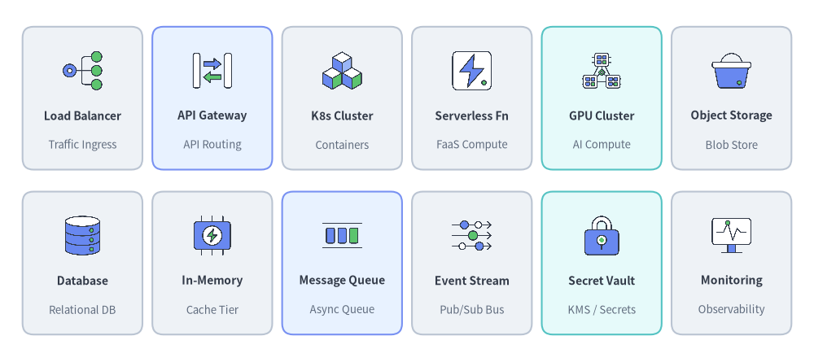
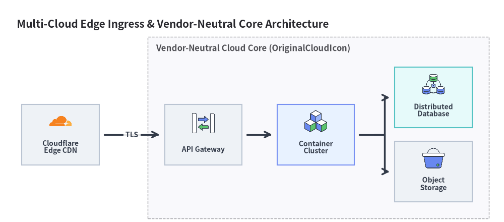

クラウド・オリジナルクラウドアイコン
Drawlib は、ペアとなる 2 つのクラウドアイコンモジュールを提供します。1 つは公式のクラウドプロバイダー・PaaS・エッジ・ホスティングブランドロゴ 45 個を収録した drawlib.icons.cloud（CloudIcon）、もう 1 つは 45 個のブランドツインと 102 個のベンダーニュートラルなクラウドサービス分類アイコンからなる計 147 個のオリジナル 2D パステルアイコンを収録した drawlib.icons.original_cloud（OriginalCloudIcon）です。あわせて アイコン概要 および アーキテクチャ図 も参照してください。

Source Code
from drawlib.canvas import save, setup
from drawlib.icons import cloud, original_cloud
from drawlib.shapes import rectangle
from drawlib.styles import Styles
from drawlib.text import text
setup(width=144, height=70)
columns = [
(
24.0,
"1. Official Brand",
"drawlib.icons.cloud (45)",
Styles.Neutral,
[
("AWS", cloud.aws),
("Google Cloud", cloud.google_cloud),
("Cloudflare", cloud.cloudflare),
("Vercel", cloud.vercel),
],
),
(
72.0,
"2. 2D Pastel Brand",
"original_cloud Twins (45)",
Styles.PrimaryNeutral,
[
("AWS", original_cloud.aws),
("Google Cloud", original_cloud.google_cloud),
("Cloudflare", original_cloud.cloudflare),
("Vercel", original_cloud.vercel),
],
),
(
120.0,
"3. Cloud Taxonomy",
"original_cloud Concepts (102)",
Styles.SecondaryNeutral,
[
("API Gateway", original_cloud.api_gateway),
("K8s Cluster", original_cloud.container_cluster),
("Object Store", original_cloud.object_storage),
("Vector DB", original_cloud.vector_database),
],
),
]
for cx, title, subtitle, card_st, items in columns:
rectangle((cx, 35.0), width=43.0, height=62.0, style=card_st.patch(shape_r=2.5))
text((cx, 60.0), title, style=Styles.DarkBold.patch(text_size=11.0))
text((cx, 54.8), subtitle, style=Styles.Muted.patch(text_size=9.5))
offsets = [(-10.2, 41.5), (10.2, 41.5), (-10.2, 19.5), (10.2, 19.5)]
sub_card = Styles.White.patch(shape_r=1.5, line_width=0.6)
for (dx, iy), (lbl, fn) in zip(offsets, items, strict=True):
ix = cx + dx
rectangle((ix, iy - 1.5), width=18.5, height=18.0, style=sub_card)
fn((ix, iy + 1.8), width=7.5, style=Styles.Primary)
text((ix, iy - 6.5), lbl, style=Styles.DarkBold.patch(text_size=9.5))
save()
1. ツインモジュール API（cloud と original_cloud）
drawlib.icons.cloud と drawlib.icons.original_cloud はどちらも完全に同一の (xy, width, *, style, variant="default") シグネチャを使用します。45 個のブランドアイコン（aws、google_cloud、azure、cloudflare、vercel など）については、モジュール名または Enum のプレフィックスを変更するだけで、公式ベンダーロゴと Drawlib の統一された 2D パステルスタイルを切り替えられます。
from drawlib.diagrams.architecture import CloudIcon, Node, OriginalCloudIcon
from drawlib.icons import cloud, original_cloud
from drawlib.styles import Styles
# 1. Official brand logo vs. 2D pastel brand twin (same canonical function name)
cloud.cloudflare((30, 25), width=10.0, style=Styles.Primary)
original_cloud.cloudflare((60, 25), width=10.0, style=Styles.Primary)
# 2. Vendor-neutral cloud taxonomy concept icon (exclusive to original_cloud)
original_cloud.api_gateway((90, 25), width=10.0, style=Styles.Primary)
# 3. Corresponding ArchitectureDiagram Enums
edge_node = Node("Cloudflare Edge", icon=CloudIcon.CLOUDFLARE)
gw_node = Node("API Gateway", icon=OriginalCloudIcon.API_GATEWAY)
| モジュール / Enum | 正規アイコン数 | 内訳 | 主なユースケース |
|---|---|---|---|
drawlib.icons.cloud（CloudIcon） |
45 | 公式のクラウド・PaaS・エッジ・ホスティングブランドロゴ 45 個 | マルチクラウド比較マトリクス、DNS／CDN エッジ構成図、本番ホスティングトポロジ。 |
drawlib.icons.original_cloud（OriginalCloudIcon） |
147 | 2D パステルブランドツイン 45 個 + ベンダーニュートラルなクラウドサービス分類アイコン 102 個 | ベンダーニュートラルなリファレンスアーキテクチャ、RFC 設計図、落ち着いた 2D パステル図解。 |
2. クラウドプロバイダー・PaaS ブランドアイコン（共通 45 正規アイコン）
全 45 個のブランドアイコンは、drawlib.icons.cloud（公式ロゴ）と drawlib.icons.original_cloud（2D パステルツイン）の両方に同一の正規関数名で収録されています。

Source Code
from drawlib.canvas import save, setup
from drawlib.icons import cloud
from drawlib.shapes import rectangle
from drawlib.styles import Styles
from drawlib.text import text
setup(width=148, height=66)
row1 = [
("AWS", "Hyperscaler", cloud.aws, Styles.Neutral),
("Google Cloud", "Hyperscaler", cloud.google_cloud, Styles.PrimaryNeutral),
("Microsoft Azure", "Hyperscaler", cloud.azure, Styles.Neutral),
("Oracle Cloud", "Enterprise Cloud", cloud.oracle_cloud, Styles.Neutral),
("Cloudflare", "Edge & CDN", cloud.cloudflare, Styles.SecondaryNeutral),
("Fastly", "Edge Cloud", cloud.fastly, Styles.Neutral),
]
row2 = [
("DigitalOcean", "Developer Cloud", cloud.digitalocean, Styles.Neutral),
("Vercel", "Frontend PaaS", cloud.vercel, Styles.PrimaryNeutral),
("Supabase", "Postgres BaaS", cloud.supabase, Styles.Neutral),
("Fly.io", "Edge Compute", cloud.fly_io, Styles.Neutral),
("Sakura Cloud", "Japan Cloud", cloud.sakura, Styles.SecondaryNeutral),
("Hetzner", "European VPS", cloud.hetzner, Styles.Neutral),
]
for row_idx, items in enumerate([row1, row2]):
cy = 48.0 if row_idx == 0 else 18.0
for col_idx, (title, sub, icon_fn, card_st) in enumerate(items):
cx = 15.0 + col_idx * 23.6
rectangle((cx, cy), width=21.8, height=26.0, style=card_st.patch(shape_r=2))
icon_fn((cx, cy + 5.0), width=8.0, style=Styles.Primary)
text((cx, cy - 3.2), title, style=Styles.DarkBold.patch(text_size=10.0))
text((cx, cy - 8.5), sub, style=Styles.Muted.patch(text_size=9.5))
save()
2.1. 全 45 ブランドアイコン リファレンス一覧（cloud & original_cloud）
| ブランドカテゴリ | 個数 | 正規関数 <module>.<name>（CloudIcon.<NAME> / OriginalCloudIcon.<NAME>） |
|---|---|---|
| ハイパースケールクラウドプロバイダー・親会社 | 16 | alibaba, alibaba_cloud, amazon, aws, azure, google, google_cloud, huawei, huawei_cloud, ibm, ibm_cloud, microsoft, oracle, oracle_cloud, tencent, tencent_cloud |
| グローバル VPS・ベアメタル・エッジ・オブジェクトストレージ | 12 | akamai, backblaze, cloudflare, digitalocean, fastly, hetzner, ionos, linode, ovhcloud, scaleway, vultr, wasabi |
| モダン PaaS・サーバーレス・BaaS プラットフォーム | 11 | coolify, deno_deploy, firebase, fly_io, heroku, netlify, railway, render, supabase, upstash, vercel |
| 国内クラウド・ホスティングプロバイダー | 6 | conoha, idcf, kagoya, nifcloud, sakura, xserver |
3. ベンダーニュートラルなクラウド分類アイコン（original_cloud 102 個）
45 個のブランドツインに加え、drawlib.icons.original_cloud には特定のハイパースケーラーの製品名に縛られずにクラウド非依存のシステムアーキテクチャを設計できる 102 個のベンダーニュートラルなクラウド分類アイコンが収録されています。

Source Code
from drawlib.canvas import save, setup
from drawlib.icons import original_cloud
from drawlib.shapes import rectangle
from drawlib.styles import Styles
from drawlib.text import text
setup(width=148, height=66)
row1 = [
("Load Balancer", "Traffic Ingress", original_cloud.load_balancer, Styles.Neutral),
("API Gateway", "API Routing", original_cloud.api_gateway, Styles.PrimaryNeutral),
("K8s Cluster", "Containers", original_cloud.container_cluster, Styles.Neutral),
("Serverless Fn", "FaaS Compute", original_cloud.serverless_function, Styles.Neutral),
("GPU Cluster", "AI Compute", original_cloud.gpu_cluster, Styles.SecondaryNeutral),
("Object Storage", "Blob Store", original_cloud.object_storage, Styles.Neutral),
]
row2 = [
("Database", "Relational DB", original_cloud.database, Styles.Neutral),
("In-Memory", "Cache Tier", original_cloud.in_memory_cache, Styles.Neutral),
("Message Queue", "Async Queue", original_cloud.message_queue, Styles.PrimaryNeutral),
("Event Stream", "Pub/Sub Bus", original_cloud.event_stream, Styles.Neutral),
("Secret Vault", "KMS / Secrets", original_cloud.secret_vault, Styles.SecondaryNeutral),
("Monitoring", "Observability", original_cloud.monitoring, Styles.Neutral),
]
for row_idx, items in enumerate([row1, row2]):
cy = 48.0 if row_idx == 0 else 18.0
for col_idx, (title, sub, icon_fn, card_st) in enumerate(items):
cx = 15.0 + col_idx * 23.6
rectangle((cx, cy), width=21.8, height=26.0, style=card_st.patch(shape_r=2))
icon_fn((cx, cy + 5.0), width=8.0, style=Styles.Primary)
text((cx, cy - 3.2), title, style=Styles.DarkBold.patch(text_size=10.0))
text((cx, cy - 8.5), sub, style=Styles.Muted.patch(text_size=9.5))
save()
3.1. 全 102 ベンダーニュートラルアイコン カテゴリ別リファレンス一覧
| 分類カテゴリ | 個数 | 正規関数 drawlib.icons.original_cloud.<name>（OriginalCloudIcon.<NAME>） |
|---|---|---|
| クラウドトポロジ・環境・アカウント | 8 | cloud, external_saas, hybrid_cloud, multi_cloud, on_premises, organization_account, private_cloud, public_cloud |
| コンピューティング・コンテナ・サーバーレス・仮想化 | 16 | app_service, autoscaling, bare_metal, batch_job, compute, container, container_cluster, gpu_cluster, gpu_node, npu_node, serverless_function, virtual_desktop, virtual_machine, virtualization_cluster, virtualization_controller, virtualization_host |
| ストレージ・バックアップ・災害復旧 (DR) | 6 | backup_archive, block_storage, data_migration, disaster_recovery, file_storage, object_storage |
| データベース・キャッシュ・検索 | 9 | database, db_replica, distributed_database, graph_database, in_memory_cache, nosql_database, search_engine, time_series_database, vector_database |
| ネットワーキング・エッジ・ゲートウェイ・サービスメッシュ | 19 | api_gateway, bastion_host, cdn, dedicated_interconnect, dns, edge_location, internet_gateway, load_balancer, nat_gateway, network_peering, private_endpoint, reverse_proxy, router, service_discovery, service_mesh, switch, transit_hub, virtual_network, vpn_tunnel |
| セキュリティ・アイデンティティ・ゼロトラスト・ガバナンス | 14 | audit_compliance, certificate_tls, ddos_protection, directory_service, firewall, identity_auth, ids_ips, key_management, secret_vault, security_center, user, user_group, waf, zero_trust_proxy |
| データ分析・ストリーミング・メッセージング・AI | 17 | ai_agent, analytics_engine, bi_dashboard, blockchain_ledger, data_catalog, data_lake, data_warehouse, email_service, etl_pipeline, event_stream, llm_model, media_streaming, message_queue, notification, scheduler, webhook, workflow_orchestrator |
| DevOps・オブザーバビリティ・FinOps・IoT・クライアント | 13 | artifact_registry, billing, cicd_pipeline, cost_management, desktop_app, digital_twin, git_repository, iot_device, iot_hub, logging, mobile_app, monitoring, web_browser |
4. ベンダーニュートラル＆マルチクラウドアーキテクチャ構成例
ArchitectureDiagram 内で CloudIcon と OriginalCloudIcon を組み合わせることで、マルチクラウドのエッジルーティングとベンダーニュートラルなバックエンドマイクロサービスを表現できます。
from drawlib.canvas import save, setup
from drawlib.diagrams.architecture import (
ArchitectureDiagram,
CloudIcon,
Node,
NodeGroup,
OriginalCloudIcon,
)
from drawlib.styles import Styles
setup(width=150, height=66)
d = ArchitectureDiagram(
node_style=Styles.Primary,
node_text_style=Styles.DarkBold.patch(text_size=10.0),
edge_style=Styles.DarkBold,
edge_text_style=Styles.DarkBold.patch(text_size=10.0),
node_card_style=Styles.Neutral,
title="Multi-Cloud Edge Ingress & Vendor-Neutral Core Architecture",
)
cf = d.add(
Node("Cloudflare\nEdge CDN", width=23, height=18, icon=CloudIcon.CLOUDFLARE, icon_size=7.5),
xy=(14.0, 22.0),
)
vpc = d.add(NodeGroup(title="Vendor-Neutral Cloud Core (OriginalCloudIcon)", padding=5.0), xy=(40.0, 4.0))
gw = vpc.add(
Node("API Gateway", width=23, height=18, icon=OriginalCloudIcon.API_GATEWAY, icon_size=7.5),
xy=(16.5, 18.0),
)
k8s = vpc.add(
Node(
"Container\nCluster",
width=23,
height=18,
icon=OriginalCloudIcon.CONTAINER_CLUSTER,
icon_size=7.5,
card_style=Styles.PrimaryNeutral,
),
xy=(50.0, 18.0),
)
db = vpc.add(
Node(
"Distributed\nDatabase",
width=23,
height=18,
icon=OriginalCloudIcon.DISTRIBUTED_DATABASE,
icon_size=7.5,
card_style=Styles.SecondaryNeutral,
),
xy=(85.0, 29.0),
)
obj = vpc.add(
Node("Object\nStorage", width=23, height=18, icon=OriginalCloudIcon.OBJECT_STORAGE, icon_size=7.5),
xy=(85.0, 7.0),
)
d.connect(cf, gw, label="TLS", padding=1.5)
d.connect(gw, k8s, padding=1.5)
k8s.fork([db, obj], at_x=107.5, padding=1.5)
d.draw(xy=(4.0, 4.0))
save()
